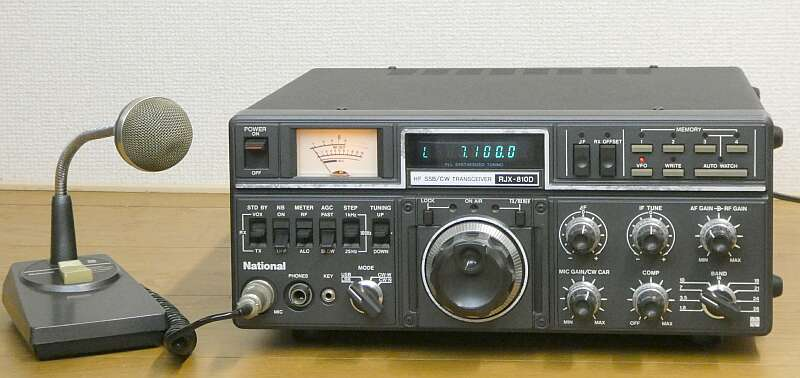
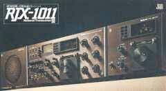
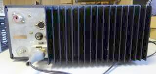
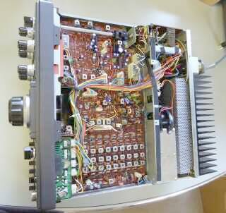
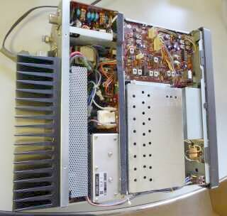
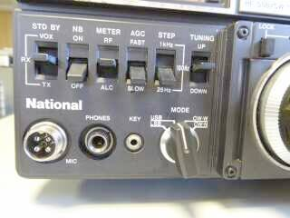
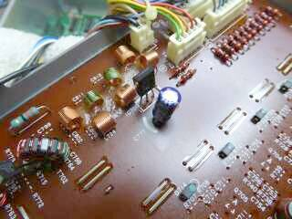

現在のＰａｎａｓｏｎｉｃも、あるときアマチュア無線機器を販売していました
松下電器産業ラジオ事業部、と記載があります
ここでご紹介するのは、１９８２年に発売されたＨＦトランシーバです
１．８～２９．７ＭＨｚ ＷＡＲＣバンドを含むオールバンド ＳＳＢ／ＣＷ １００Ｗ機 いわゆる普及機です
他社では、ゼネカバ受信に対応したトランシーバーも発売されている中、本機はあくまでアマチュアバンド専用です
なんとなく、ＴＲＩＯ／ＫＥＮＷＯＯＤ顔です
私も、手にしたのは初めてです |

幅３２２ 高さ１３２ 奥行き３１６（放熱フィンを含めると４０２） 単位ｍｍ
メータ部赤の色落ち（日焼け）が、時の経過を感じます
同時期に、ICOMからは、IC-720A YAESUからは、FT-ONE JRCからは、JST-100が登場 |
松下電器産業ラジオ事業部としては、本機の発売からさかのぼること７年前、１９７５年にＲＪＸ-１０１１というフロント・パネルもデカければ価格も高い（確か￥４３０，０００-）、そして珍しい？数字４桁の型式という高級トランシーバーを出していました
 |
ＲＪＸ－１０１１
ファイナルは、自社のＳ２００２ （お馴染みの、Ｓ２００１ではない）Ｘ ２本という、ハイブリッド構成でした
ＵＳでは、ｈｙ-ｇａｉｎ（アンテナ・メーカー）ブランドで売られていました
この独特のデザインは、同時期に発売された、ＲＪＸ－６６１という５０ＭＨｚ帯 オール・モード・トランシバーにも採用されています |
本機は、オール・ソリッド・ステートで、ＡＣ電源も内蔵・・・スイッチング・タイプのものを内蔵し、重量は９．５Ｋｇという小型軽量のものです
Ｎ社では、この後、オールバンドの無線機を出すことなく、このマーケットから撤退となりました
ＲＪＸ－７５１ ７／２１／５０ＭＨｚ ３バンド ＳＳＢ／ＣＷトランシーバ（１９８３年発売）が、最後の無線機となりました
|
|
特別に目に付く機能とか性能は見あたりません、この時期ごく一般的なＨＦトランシーバー／普及機かと思います
ＤＢＭを多用し、ＡＧＣはオーディオ検出型で、ＲＦ段についてはＡＴＴ方式を併用、ダイナミックレンジの向上を目指してあります
ＰＬＬデジタル・シンセサイザを採用した、ＩＦ９ＭＨｚのシングル・コンバージョン方式です
２ＶＦＯ（たすき掛けＯＫ）を装備
マイクコンプレッサを内蔵・・・スピーチプロセッサではありません
６００Ωから５０ＫΩのマイクロホンに対応と、ここは融通が利きます
ＰＬＬ同様に、この頃の流行りであったＩＦシフト・・・この社では、ＩＦチューンと表現・・・も搭載
面白いところで
オートワッチシステム
メモリ設定した２つの周波数間を１ＫＨｚステップでオートスキャン
信号を見つけると、勝手に３ＫＨｚ戻って、１００Ｈｚ単位でスロースキャンに
ＣＰＵバックアップの内蔵電池は、ありません
ＡＣ電源プラグを抜くと初期値に戻ってしまいます
ＡＣ電源内蔵で、ＡＣプラグを常に商用電源に差し込んでおくことで、バックアップできていると言うつもりかも |
|
 |
リアパネルは、極めてシンプル
ＡＣＣ端子 電源ヒューズ アンテナ接続コネクタ、外部スピーカー接続端子 電源接続コネクタ（ＡＣ／ＤＣ兼用） アース端子
以上です
|
|
 |
ボトム・カバーを外して撮したものです
普通のベークライト基板の採用
でも、保存状態は良いようで、基板の劣化は目に付きません
写真では、１枚の基板に見えますが、基板は２枚構成です（ＲＦ＆ＢＰＦ部と、ＩＦ＆ジェネレータ部）
メイン・ダイヤル
ロータリー・エンコーダー方式なのですが、タッチはまるでバーニア・ダイヤルを回すかのようです
元々がこうなのかどうか知らないのですが、きっと意識してこうしてあるのだろうと思います
ボトム・カバーに内蔵スピーカーが取り付いています
内蔵スピーカーにしては大型のしっかりしたスピーカーですが、サランネット（スピーカーの前に貼る布）は付いていません
外から、スピーカー・コーン丸見えです |
|
 |
トップ・カバーを外した状態で撮したもの
アンテナコネクタ右が、ＲＦフィルタ群
バンド切替ＳＷで選択されます
今回のマシンでは、２１ＭＨｚ帯部分に、なにかロスする原因がありそうですが、無視しました（点検せず！）
ベーク基板部は、ＶＣＸＯ＆ＣＡＲブロック
シールﾄﾞ・ケースの中身が、問題が色々あったＰＬＬブロックです（上下に２枚の基板で構成されています） |
|
 |
こんなところに会社ロゴを入れるのは、さすが宣伝の松下電器産業・・・でしょうか！？
ＵＳでは、使用できなかった「Ｎａｔｉｏｎａｌ」です
フロントにキージャックが配置されているのは、良いことかも
ダイヤル・ステップは、１ＫＨｚ、１００Ｈｚ、２５Ｈｚの三択です |
|
機会があれば、Ｎａｔｉｏｎａｌ（松下電器産業）のＨＦ機を見てみたい、と言う思いがありました
時々送受信できない
こういう曰くのあったものを入手しました
なるほど、電源を入れると、バンドによって受信できたり出来なかったり、放置しておくとガサゴソ音がして受信していたものが受信できなくなったり、また突然受信したり・・・ガサゴソがとても気になります
メカ的なトラブル・・・接触不良が想像されます
まずは基板取り付けビスの増し締め・・・予想どおりＰＬＬ関係基板２枚については、８本全て３／４回転くらい回りました
絶縁ワッシャの入ったところや、シールドケースもわざと半田付けしないところがあったりと、作者の苦心が見えます
そして次は、バンドスイッチの接点クリーニング
ここまでの処置で、一見正常に動作をするようになりました
時々、ビートが極端に濁る
言葉で表現しづらいのですが、いわゆる低い周波数でＦＭ変調されたというか、濁ったというか・・・
とても受信に耐えません（酷い音に復調されます）
ケースほか、フレームをトントン叩くと、異常に反応します
アース不良／増し締め不足の問題ではありません |

この写真は、コンデンサ交換前、元の状態 |
とんでもないところに原因がありました
左写真は、怪しいと思って取り出したＰＬＬ基板／下側を撮したものです
この基板内にある５Ｖの三端子レギュレータの出力側パスコン・・・・６．３Ｖ１００μＦの電解コンデンサ
よく見ると、周囲の基板が何となく黒ずんでいます
電解液が漏れたのかも知れません
取り外してＣメータで見ると、容量がふらふら変化します
直流抵抗で見ると、リークがありそうです
新品に交換することで、時々起きる極端にビートが濁る症状はなくなりました
どこがどうしてこうなった・・・ここは、結果オーライで！？ |
|
|
全体の調整をして、最後にスペック・チェックです
送信 １．８～２４．５ＭＨｚ帯 ２１ＭＨｚ帯を除き １００Ｗ以上
２８ＭＨｚ帯 ５０Ｗ以上
２１ＭＨｚ帯のみ８０Ｗ程度です
想像ですが、前のオーナーが２１ＭＨｚ帯を多用されたのか、ＲＦフィルタ部に劣化が
生じていると思われます（アンテナ負荷に、何か無理があったのかな）
私的には問題にならない範囲なので、無視します
受信 スペックどおり、全バンドにおいて０．２５μＶ入力で Ｓ／Ｎ１０ｄｂ以上が得られました
７ＭＨｚ帯においては、０．１６μＶ ２８ＭＨｚ帯で、ちょうど ０．２５μＶ
実際の受信においては、ごく一般的なフィーリングです |
|
本機ですが、ＰＬＬ出始めの言わばメーカーとして挑戦的な製品であることは否めません（ここで、無線機作りの技術が途切れたことは、残念に思います）
全体をひとつのループで行うまでにも至っていません（各バンド毎に、水晶発振子の周波数調整が必要だし、安定度もバラバラ）
また、キャリア（Ｌｏ）のピュリティが気になります
２８ＭＨｚ帯になると、ＳＳＧの信号を受信するだけでも気になります
ＤＤＳの登場まで、仕方のないことなのかも知れません
最近のマシン、特に高級機のこの手の性能はとてつもなく良くなっています
それが近接信号に対する強さの元にもなっています |